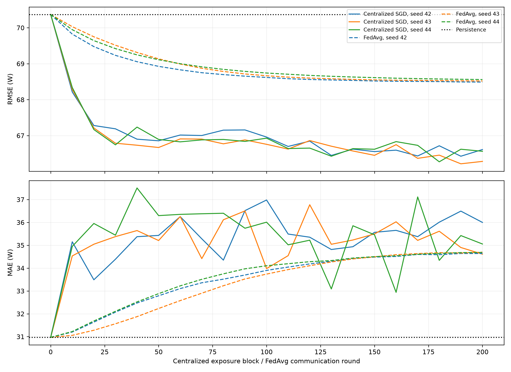
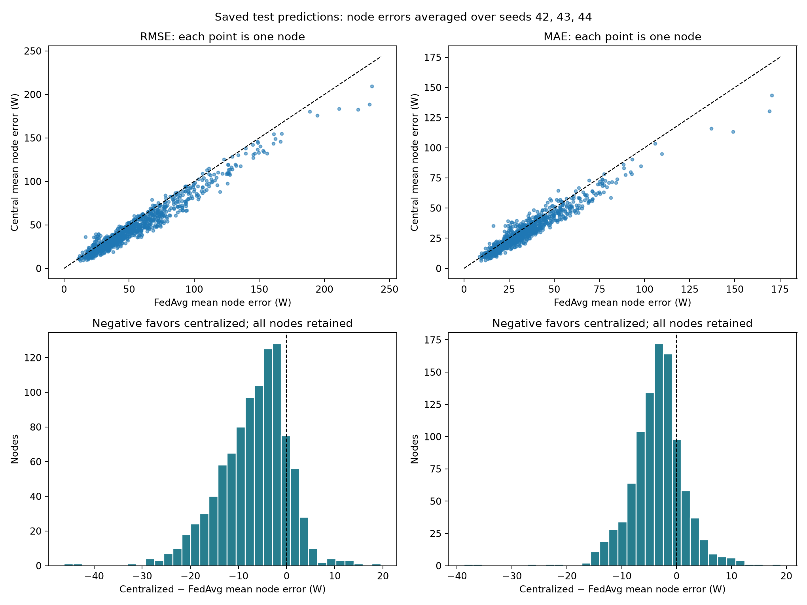

Methodology and Results: FedAvg-GRU and a Matched Centralized-SGD Control
M.Tech Major Project • Methodology and Results • Documentation version 1 • Evidence snapshot: 24 October 2026
This study investigates one-hour-ahead, node-level electrical-power forecasting using the M100 telemetry dataset. A residual gated recurrent unit (GRU) model is trained using simulated federated averaging (FedAvg) and compared with a matched centralized stochastic-gradient-descent (SGD) control and persistence. The common frozen cohort comprises 979 compute-node identifiers, 4,506,133 training windows, 199,670 validation windows and 75,566 test windows. The measured comparison uses one hour of input history and masks standardized outdoor temperature and humidity while retaining indoor inlet temperature. [S23] [S01] [S24]
Across seeds 42, 43 and 44, centralized SGD obtains test RMSE 56.016953 ± 0.852660 W and MAE 30.516738 ± 1.941197 W; FedAvg obtains RMSE 63.231179 ± 0.125510 W and MAE 33.924637 ± 0.285604 W. Persistence gives RMSE 64.417454 W and MAE 30.926903 W. The deviations are sample standard deviations of three individual seed scores on the same dataset, not confidence intervals or independent-dataset estimates. Centralized SGD has lower measured test errors under this protocol; the results do not establish a general ranking of learning paradigms. The test period was already observed, and neither energy savings nor a fully privacy-preserving deployment has been demonstrated. [S01] [S12] [S17]
This document supplies methodology, results, interpretation and future-work material for an M.Tech thesis. It does not invent a literature review or external bibliographic citations. Bracketed S-identifiers refer to the exact repository evidence listed in Appendix C and SOURCES.md/SOURCES.json, including SHA-256 hashes. Measured findings are separated from the unexecuted proposals in Section 9. Historical documentation is interpreted according to its original stage; later completed artifacts take precedence over statements that training or test reporting had not yet occurred.
The research problem is to forecast each monitored compute node’s average electrical power over the next hour from its recent operational, thermal and calendar context. Such forecasts may support later capacity or energy-management research, but forecasting accuracy alone does not measure the effect of any control policy. The present task is continuous regression in watts, not workload classification, carbon-emission prediction, total-facility-power prediction or an operational energy-optimization experiment. [S23] [S31]
The objectives are to establish a reproducible chronological forecasting cohort; implement a shared residual GRU with node identity; compare FedAvg with a centralized control that matches initialization, optimizer settings and reconstructed training exposures; quantify pooled and per-node errors against persistence; and preserve the provenance of validation selection and final test reporting. The comparison concerns already-known nodes from one facility, with one simulated client per node. It is not an independent-data-center federation or an unseen-node generalization study. [S24] [S32] [S43] [S44]
All measurements in this document are taken from existing completed artifacts. Documentation preparation performed no training, checkpoint inference or evaluation rerun. The existing final report had already reconciled the saved prediction archives with the frozen reference and found zero discrepancy in the checked W metrics. This document uses those saved summaries and verifies their integrity and arithmetic only. [S03] [S02]
The repository identifies the source as M100 Dataset 5 and records January–February 2022 archives under Zenodo record 7589942. The prepared audit describes a shared-model cohort from one facility. Node strings are compute-node identifiers; they must not be relabeled as separate sites or data centers. The audit discovers 980 candidate identifiers and retains 979. Identifier 0 is excluded because it has insufficient complete windows in a chronological split: its audit records 3,210 training windows and zero validation/test windows. Node eligibility requires the relevant sensor records and at least ten complete windows in each split. [S41] [S26] [S24]
Table 2.1. Frozen benchmark cohort [S22] [S23]
| Split | Accepted windows | Input shape per window | Target |
|---|---|---|---|
| Training | 4,506,133 | 6 × 14 | One next-hour mean |
| Validation | 199,670 | 6 × 14 | One next-hour mean |
| Test | 75,566 | 6 × 14 | One next-hour mean |
The full calendar grid runs from 2022-01-01 00:00 UTC to 2022-03-01 00:00 UTC exclusive. Accepted windows are incomplete in time and uneven across nodes. In the test set, 94 distinct forecast origins occur on six calendar dates; individual nodes have 46–93 accepted test windows. These counts describe filtered forecasting windows, not a continuously observed test trace. No cause of every coverage gap is inferred from aggregate counts. [S24] [S25] [S01]
Table 2.2. Recorded test coverage by UTC date [S25]
| Date | Accepted windows | Distinct origins on date |
|---|---|---|
| 2022-02-20 | 1,671 | 2 |
| 2022-02-23 | 14,519 | 18 |
| 2022-02-24 | 35,211 | 44 |
| 2022-02-25 | 10,351 | 13 |
| 2022-02-27 | 8,150 | 10 |
| 2022-02-28 | 5,664 | 7 |
At forecast origin t, six completed ten-minute input bins span [t−60 min, t). The scalar target is the arithmetic mean of six valid future ten-minute node-power bins spanning [t, t+60 min). Thus the horizon denotes the next hour’s mean power, not the instantaneous power exactly sixty minutes later. A candidate origin is tested on the ten-minute grid; overlapping histories and target intervals create temporal dependence between adjacent windows. All target bins and all required input features must be valid. [S28] [S23]
y_n(t) = (1/6) ∑(j=0,…,5) p_n([t+10j min, t+10(j+1) min)) . (1)
Here p_n denotes the prepared ten-minute power estimate in kW. The exact saved target name is next_horizon_mean_node_it_power_kw. Predictions and targets are converted to W for reporting by inverse target scaling followed by multiplication by 1000. The target is node-level IT power as defined by the recorded total_power metric, not measured cooling power, PUE or energy consumption. [S23] [S31] [S29]
Node metric records are stably sorted and deduplicated by node/time, retaining the last occurrence in the recorded ordering. Invalid finite/range observations are rejected: percentages must lie in [0,100], power and free memory are nonnegative, and total memory must be positive. Temperature channels require finite values without speculative temperature cutoffs. Local sensor bins use causal time-weighted sample holds capped at 300 s. A bin requires at least 50% time coverage. Consequently, the target averages valid coverage-controlled bin estimates; it is not a guarantee that every second of the future hour had a sensor observation. [S28] [S29] [S23]
Outdoor weather is joined using the latest observation strictly before the input bin’s right edge, with a maximum age of 30 minutes. Missing/stale weather remains invalid rather than being filled from a future observation. Memory-used fraction is 1 − binned(mem_free)/binned(mem_total), and fractions outside [0,1] become invalid. A window is omitted if any required history feature or future power bin is invalid. Windows do not concatenate across node identities or missing temporal bins. These causal holds are distinct from arbitrary interpolation or backward filling. [S28] [S29]
Table 2.3. Exact frozen input channels [S23] [S22] [S28] [S29]
| Index | Exact feature name | Source or transformation | Unit | Category | Masked |
|---|---|---|---|---|---|
| 0 | power_kw | IPMI total_power bin estimate divided by 1000 | kW | operational | No |
| 1 | cpu_user | Ganglia cpu_user bin estimate | % | operational | No |
| 2 | cpu_system | Ganglia cpu_system bin estimate | % | operational | No |
| 3 | cpu_idle | Ganglia cpu_idle bin estimate | % | operational | No |
| 4 | cpu_wio | Ganglia cpu_wio bin estimate | % | operational | No |
| 5 | memory_used_fraction | 1 − binned(mem_free)/binned(mem_total) | fraction | operational | No |
| 6 | inlet_temperature_mean_c | Binned IPMI ambient; historical feature name, not a verified spatial average of multiple inlets | degC | environmental | No |
| 7 | outdoor_temperature_c | As-of weather temp before bin right edge | degC | environmental | Yes |
| 8 | outdoor_humidity_percent | As-of weather humidity before bin right edge | % | environmental | Yes |
| 9 | hour_sin | sin of UTC daily phase at bin right edge | unitless | time-derived | No |
| 10 | hour_cos | cos of UTC daily phase at bin right edge | unitless | time-derived | No |
| 11 | week_sin | sin of weekly phase at bin right edge | unitless | time-derived | No |
| 12 | week_cos | cos of weekly phase at bin right edge | unitless | time-derived | No |
| 13 | node_index | Position in frozen node_names mapping | categorical index | other: categorical | No |
For the calendar channels, with s equal to the UTC bin-right-edge Unix time in seconds, daily phase is 2π(s mod 86400)/86400. Weekly phase is 2π((s+3×86400) mod 604800)/604800, as implemented. All thirteen non-ID channels are standardized with pooled training-window means and standard deviations; near-zero standard deviations are replaced by one. The target has its own training-only mean and standard deviation. Node index 13 is categorical and retains mean 0 and scale 1 rather than being standardized. The frozen scalers are reused without fitting on validation or test. [S28] [S23]
Both measured methods use weather="masked": standardized channels 7 and 8 are set to zero on batch copies, representing their respective training means. This preserves all fourteen input slots, node IDs, calendar values, targets, window identities and scalers. Index 6, indoor inlet temperature, remains available; therefore this is outdoor-weather masking, not removal of every environmental feature. Because complete windows were frozen before masking, the mask does not recover windows previously lost to missing weather. GPU-utilization sensor channels are excluded by the preprocessing configuration; this does not imply that model training ran on a CPU. [S30] [S40] [S23]
Table 2.4. Shared calendar split boundaries [S22] [S23]
| Split | Lower boundary, inclusive UTC | Upper boundary, exclusive UTC |
|---|---|---|
| Training | 2022-01-01 00:00:00 | 2022-02-11 07:10:00 |
| Validation | 2022-02-11 07:10:00 | 2022-02-20 03:30:00 |
| Test | 2022-02-20 03:30:00 | 2022-03-01 00:00:00 |
The cut indices are obtained from 70% and 85% of the common calendar-bin grid, with integer truncation; the remaining interval is test. These are calendar proportions, not guaranteed 70/15/15 proportions of accepted windows. Every target interval must lie wholly inside its assigned split. Validation/test history may reach into the preceding split because it contains only observations available before the new forecast origin. The same node mapping and calendar cuts are used by both methods. [S28] [S23]
The training workers’ API exposes client-local training examples only, while the coordinator owns a separate complete-validation capability. Final test access occurs through explicitly locked evaluation adapters. However, original cohort admission uses completeness in all splits, including test-period availability. This retrospective coverage-based selection is a limitation even though future target values were not fitted into the training scalers. The benchmark describes forecasting for this selected cohort, not arbitrary missing-data or unseen-node deployment. [S24] [S32] [S38] [S39]
Table 3.1. Shared residual-GRU architecture [S27] [S34] [S45]
| Component | Verified implementation |
|---|---|
| Saved input | Six time steps, fourteen channels |
| Node identity | Categorical index at channel 13; frozen mapping of 979 nodes |
| Embedding | Learned 979 × 8 table; replaces the index inside the network |
| Recurrent input width | 13 non-ID channels + 8 embedding values = 21 |
| Recurrent model | torch.nn.GRU, two layers, hidden size 64, batch_first=True |
| Sequence reduction | Final output time step of the top recurrent layer |
| Regression head | Linear 64 → 1 |
| Residual reference | Fixed two-element baseline_coefficients buffer |
| Initial correction | Linear head weight and bias initialized to zero |
The stored node index is one of the fourteen input channels; the eight-dimensional embedding is a separate learned parameter table, not eight additional saved feature channels. It is repeated at every history step after the categorical index is removed from the numerical input. The architecture therefore consumes a 21-dimensional recurrent vector. The code defines a standard many-to-one GRU and linear residual head; no attention mechanism, exogenous forecast decoder or additional undocumented layer is asserted. [S27]
ẑ_y = Linear(GRU([z_0,…,z_12, embedding(node)] at the final history step)) + a z_power,last + b . (2)
a = σ_x,power / σ_y ; b = (μ_x,power − μ_y) / σ_y ; ŷ_W = 1000(σ_y ẑ_y + μ_y) . (3)
The zero-initialized correction makes the initial candidate mathematically persistence. Recurrent and embedding weights are freshly seeded rather than loaded from a centrally trained checkpoint. The model stores baseline coefficients as float32, whereas the physical persistence vector is reconstructed in float64 by the common evaluator; the initial neural candidate need not be bit-identical to the float64 reference. baseline_coefficients remain fixed during both training and aggregation. [S27] [S28] [S31] [S33] [S34]
Persistence predicts the last completed ten-minute power-bin mean for the entire next-hour average-power target. It uses the last input step, channel 0. It is neither the preceding hour’s average nor a fitted regression model, and it has no training seed. It is included as the initial validation-selection candidate as well as a separately reported physical-unit baseline. [S31] [S34] [S36]
Table 4.1. Fixed measured comparison protocol [S45] [S63] [S34] [S36]
| Setting | Recorded value |
|---|---|
| Seeds | 42, 43, 44 |
| Initialization | Fresh seeded GRU/embedding; zero correction head; matched initial state |
| Optimizer | SGD; learning rate 0.01; momentum 0; weight decay 0 |
| Objective | Mean squared error of standardized target predictions |
| Batch size | 512; final partial batch retained (drop_last=False) |
| Client population | 979 simulated compute-node clients |
| Selected clients per round/block | 98, uniformly sampled without replacement |
| Local passes | One epoch per selected client session |
| Training cap | 200 communication rounds / 200 central schedule blocks |
| Validation schedule | Initial candidate, then every ten rounds/blocks, including 200 |
| Selection rule | Earliest minimum pooled validation RMSE in W |
| Evaluation batch size | 1024 |
| Training tensor dtype | float32 |
L_B(θ) = (1/|B|) ∑(i∈B) (ẑ_y,i − z_y,i)² . (4)
Optimization minimizes scaled MSE, while checkpoint selection uses complete-cohort validation RMSE after conversion to W. Thus MAE is a secondary reported criterion rather than the checkpoint-selection objective. A strict-improvement rule retains the earliest tied candidate, including the initial persistence candidate. There are twenty-one scheduled validation candidates at indices 0,10,…,200; no test score chooses a seed, round, block or hyperparameter. [S34] [S36] [S38] [S39]
One client comprises all frozen training windows for one recorded node. Membership is disjoint and exhaustive over 4,506,133 training windows. The client interface preserves sequence order, frozen normalization and categorical IDs. The approved main protocol requires at least 1,024 training windows across at least seven distinct training days per client. The recorded seed42 client manifest contains 979 clients with 2,570–4,907 training windows each; clients are not filtered anew during rounds. [S32] [S45]
At each round, the coordinator samples 98 clients without replacement. Every selected client receives a clone of the same immutable global state, creates a fresh stateless SGD optimizer, shuffles its own training windows deterministically and processes one complete local epoch. Local losses, gradients and returned states must be finite. Invalid counts, stale snapshots or incompatible updates abort a round rather than silently changing the participants or weights. [S34] [S33]
θ_(r+1) = ∑(k∈S_r) [n_k / ∑(j∈S_r)n_j] θ_(r,k) , for trainable parameters. (5)
Here n_k is the participating client’s local training-window count. The implementation accumulates weighted trainable tensors in float64 on the CPU and casts back to the recorded dtype; fixed buffers retain their original values. Standard FedAvg applies to the entire shared embedding table. A client normally changes its own node row, while unchanged rows enter the same weighted average. Consequently, a client-specific embedding correction is diluted by that client’s participation weight. This is a documented mechanism, not an experimentally isolated explanation of the measured accuracy gap. [S33] [S27]
Initialization, client sampling and local shuffling use separate deterministic SeedSequence domains 0, 1 and 2. Sampling is indexed by seed and round; local shuffle additionally uses node index. Atomic round commits and previous-state fingerprints support complete-round replay after interruption. This describes the implementation and its saved provenance; documentation preparation did not repeat a resume experiment. [S34] [S35]
The control starts from the same fresh initialization as its paired FedAvg seed and uses the same architecture, weather mask, frozen cohort, loss, nominal learning rate and batch size. It reconstructs the original ordered client sessions, shuffle seeds, row-order hashes and batch sizes. One continuing central model processes those node-grouped batches sequentially; there is no averaging or reset to a common global state between nodes. A stateless SGD optimizer is initialized for each central block; zero momentum and decay mean no persistent optimizer history is carried between blocks. [S36] [S37] [S44]
The matching evidence consists of source/configuration binding, recorded FedAvg receipts, fresh-state fingerprints and deterministic reconstruction over frozen row IDs. An independent historical trace of every original FedAvg batch was not saved. The control is therefore a schedule-replay centralized control, not unrestricted pooled random mixing, and common settings do not imply identical effective optimization trajectories. All runs completed their 200-index cap; validation may select an earlier exported model. [S10] [S02] [S36]
Table 4.2. Recorded matched completed training budgets [S08] [S02]
| Seed | Example exposures per method | Local/central SGD steps per method | FedAvg selected round | Central selected block |
|---|---|---|---|---|
| 42 | 90,220,299 | 186,208 | 200 | 190 |
| 43 | 90,210,631 | 186,192 | 200 | 190 |
| 44 | 90,221,096 | 186,254 | 200 | 180 |
Each completed run comprises 19,600 client sessions (98 × 200). Example exposures count repeated visits to training windows, not distinct observations or global epochs. Matching the completed cap does not match the effective training budget of differently selected earlier checkpoints. Recorded wall times vary substantially across seeds, and saved measurements do not resolve historical resource contention or utilization. No runtime-speedup or energy-efficiency conclusion is drawn from those timings. [S08] [S09]
The coordinator evaluates the complete 199,670-window validation cohort and selects the earliest minimum pooled validation RMSE. The selected FedAvg round is 200 for every seed; central blocks are 190,190,180 for seeds 42,43,44. Final test plans bind these selections, model/configuration hashes and execution-source snapshots before test examples are opened. The completed central evaluator references the earlier FedAvg test evaluation instead of rerunning it. [S13] [S18] [S38] [S39]
MAE_s = (1/N) ∑|ŷ_i,s − y_i| ; RMSE_s = √[(1/N) ∑(ŷ_i,s − y_i)²] . (6)
Mean = (q_42 + q_43 + q_44)/3 ; sample SD = √[∑(q_s − Mean)²/(3−1)] . (7)
Each seed’s pooled error uses all accepted windows. Across-seed summaries average the individual scores, not prediction vectors. The three seeds are stochastic repeats on one shared dataset, not independent datasets; their SD is not a confidence interval or a significance test. Overlapping windows, shared timestamps and common facility conditions also limit assumptions of independent observations. All seeds are retained and no best test seed is selected. [S31] [S38] [S01]
Table 5.1. Selected validation errors in W [S08]
| Seed | Central block | Central RMSE | Central MAE | FedAvg round | FedAvg RMSE | FedAvg MAE |
|---|---|---|---|---|---|---|
| 42 | 190 | 66.426516 | 36.492287 | 200 | 68.489285 | 34.636938 |
| 43 | 190 | 66.215547 | 34.899886 | 200 | 68.518750 | 34.695020 |
| 44 | 180 | 66.270997 | 34.338824 | 200 | 68.558591 | 34.682672 |
Table 5.2. Validation mean ± sample SD in W [S08]
| Method | RMSE | MAE |
|---|---|---|
| centralized_sgd | 66.304353 ± 0.109368 | 35.243666 ± 1.117134 |
| fedavg | 68.522209 ± 0.034782 | 34.671543 ± 0.030599 |
| persistence | 70.369741 ± 0.000000 | 30.969863 ± 0.000000 |
All validation results refer to the same 199,670 windows and 979 nodes. Centralized SGD lowers mean validation RMSE relative to FedAvg but has a higher mean validation MAE. Both models have lower validation RMSE and higher validation MAE than persistence. This trade-off is consistent with RMSE-based selection and MSE optimization; it does not demonstrate a specific causal mechanism. Persistence has zero across-seed SD because its prediction vector and cohort are fixed. [S08]

The validation report was produced before the central test-evaluation stage and states that central test metrics were not yet available. That historical statement is preserved in the original report. The later completed central test artifacts and final comparison supply Section 6; no historical report was rewritten to conceal this progression. [S09] [S21] [S04]
Table 6.1. Locked selected-model test errors in W [S17] [S12]
| Seed | Central block | Central RMSE | Central MAE | FedAvg round | FedAvg RMSE | FedAvg MAE |
|---|---|---|---|---|---|---|
| 42 | 190 | 56.970821 | 32.757930 | 200 | 63.107024 | 33.681455 |
| 43 | 190 | 55.328756 | 29.428369 | 200 | 63.358001 | 34.239143 |
| 44 | 180 | 55.751282 | 29.363914 | 200 | 63.228511 | 33.853313 |
Table 6.2. Test mean ± sample SD in W [S01] [S17] [S12]
| Method | RMSE | MAE |
|---|---|---|
| centralized_sgd | 56.016953 ± 0.852660 | 30.516738 ± 1.941197 |
| fedavg | 63.231179 ± 0.125510 | 33.924637 ± 0.285604 |
| persistence | 64.417454 ± 0.000000 | 30.926903 ± 0.000000 |
The quoted FedAvg test metrics, 63.23 ± 0.13 W RMSE and 33.92 ± 0.29 W MAE when rounded, originate from output/experiments/v2_fedavg/test_evaluation/v1_retry1. Its authoritative seed42 export is in gru_masked_seed42b; seeds43/44 use their corresponding recorded directories. They are not validation scores, macro-node averages or the earlier v1 centralized benchmark. The prior final-report audit reconciles every individual and per-node score from all six saved prediction archives with zero checked metric discrepancy and verifies 44 FedAvg and 48 central test artifacts. [S02] [S03] [S12]
Table 6.3. Reductions in mean test error, percent; positive is better [S01]
| Metric | Central vs FedAvg | Central vs persistence | FedAvg vs persistence |
|---|---|---|---|
| RMSE | 11.409286 | 13.040722 | 1.841543 |
| MAE | 10.045500 | 1.326241 | -9.692966 |
Error reduction is 100 × (reference error − model error)/reference error; it is not a percentage of predictions classified as correct. Centralized SGD improves both test errors relative to FedAvg in every paired seed. Its mean MAE gain over persistence is modest, and seed42 central MAE is worse than persistence, while seeds43/44 are better. FedAvg reduces pooled test RMSE relative to persistence but increases pooled MAE. Validation and test describe different periods, so the mean MAE ordering observed during validation must not be substituted for the test ordering. [S01] [S08]
Pooled MAE = ∑_n (N_n/N) MAE_n ; pooled RMSE = √[∑_n (N_n/N) RMSE_n²] . (8)
Equal-node mean MAE = (1/K)∑_n MAE_n ; equal-node mean RMSE = (1/K)∑_n RMSE_n . (9)
Pooled metrics weight every forecasting window equally. Equal-node averages weight each node equally regardless of its accepted-window count. Moreover, an average of node RMSEs does not equal the square root of pooled MSE. The primary headline comparison uses pooled metrics; equal-node summaries characterize the distribution of performance across clients. [S31] [S01]
Table 6.4. Equal-node errors averaged across the three seeds, W [S01]
| Metric | Central | FedAvg | Persistence |
|---|---|---|---|
| RMSE | 47.425109 | 54.160553 | 53.842224 |
| MAE | 30.219473 | 33.647441 | 30.703514 |
FedAvg’s equal-node mean RMSE is slightly above persistence even though its pooled RMSE is below persistence. This is consistent with different weighting and nonlinear averaging, rather than an inconsistency in the saved scores. Centralized SGD improves both forms of summary here. Neither pooled averages nor macro averages imply uniformly better performance at every node. [S01]
For each node and seed, the signed difference is central error minus FedAvg error in W, so a negative value favors the centralized control. Each node’s summary difference averages its three paired seed differences. All 979 nodes and 2,937 node–seed pairs are retained, including regressions. The existing CSVs include sample counts, per-seed errors, persistence comparisons, paired-difference SDs and node-target variability; no node is removed because of poor performance. [S06] [S07] [S01]
Table 6.5. Counts based on each node’s across-seed mean error [S01]
| Metric | Central better | FedAvg better | Exact ties | Central better in all 3 seeds | Median central−FedAvg W |
|---|---|---|---|---|---|
| RMSE | 843 | 136 | 0 | 701 | -5.833295 |
| MAE | 788 | 191 | 0 | 542 | -3.245006 |

The node-level results demonstrate heterogeneity within the measured cohort: the centralized advantage in pooled error coexists with nodes favoring FedAvg. These descriptive counts do not establish independent-client statistical significance or authorize choosing a client subset after seeing test scores. Error heterogeneity should motivate separately designed diagnostic studies rather than retrospective alteration of the reported cohort. [S01]
RMSE penalizes large deviations more strongly than MAE. A model can lower RMSE while increasing typical absolute error; the observed FedAvg–persistence comparison illustrates this distinction. The chosen checkpoint criterion directly targets RMSE, not MAE. Reports should therefore present both metrics, per-node distributions and the baseline rather than compressing forecasting performance into an unsupported single accuracy percentage. The metric pattern is consistent with differing error distributions, but an exact causal account requires a controlled diagnostic experiment. [S01] [S34] [S36]
Under this fixed simulated-node, schedule-replay protocol, the centralized control has lower measured test RMSE and MAE than FedAvg. The experiments do not show that federated learning outperforms centralized learning, nor do they show that every centralized approach will outperform every federated approach. Learning-rate equivalence, aggregation, node embedding updates, heterogeneous client histories and selected checkpoints can influence the gap; no causal ablation isolating these factors was performed. [S01] [S33] [S36]
First, the test period has already been observed in previous project stages, including earlier model comparisons and FedAvg reporting. It is an observed development benchmark, not untouched confirmatory data. Later checkpoint selections were locked on validation, but this does not erase historical test exposure. Future confirmatory claims require a genuinely independent period or cohort reserved before further method selection. [S22] [S04] [S13] [S18]
Second, seeds share one dataset and one test cohort; their sample SD quantifies this limited optimization/sampling variation, not population uncertainty. Overlapping forecasts and shared environmental conditions create dependencies. The evidence spans two months at one facility and only known nodes; it does not establish cross-facility, unseen-client, long-term or season-wide generalization. Sparse accepted coverage and test-availability-based cohort admission constrain external validity. [S23] [S24] [S25] [S01]
Third, prediction does not prove energy savings. The experiments contain no implemented scheduler or cooling controller, no causal intervention, no measured kWh reduction and no PUE optimization outcome. Node power in W differs from energy integrated over time and from total facility power. No measured carbon savings or carbon-emission prediction result is reported. Any such claim would require additional measurements, boundary definitions and an independent optimization/control study.
Fourth, the experiments simulate federated clients in a centrally accessible process and use centrally prepared pooled-training scalers. The local-data API restricts which arrays a worker receives, but it is not an operating-system isolation or cryptographic boundary. Secure aggregation, differential privacy, protected network transport, attack resistance and a fully privacy-preserving deployment were not established. Shared parameters and node identities should not be interpreted as a privacy guarantee. [S32] [S33] [S45]
Table 8.1. Historical training environment recorded in the run manifest [S45]
| Field | Recorded value |
|---|---|
| Python | 3.14.7 |
| PyTorch | 2.14.1+cu130 |
| NumPy | 2.5.3 |
| CUDA build | 13.0 |
| Device | cuda:0 |
| GPU | NVIDIA RTX 6000 Ada Generation |
The runs record software versions, deterministic-algorithm settings, seeds, source snapshots, frozen-contract fingerprints, selected exports and receipt chains. Deterministic cuDNN/CUBLAS settings and disabled TF32 are implemented for these runs; exact cross-hardware bit identity is not promised. Checkpoints and interrupted-round recovery are governed by immutable commits and fingerprints. Recorded validation export/reload checks are historical evidence, not checks rerun while preparing this document. [S34] [S35] [S37] [S02]
Table 8.2. Authoritative experiment directories [S02] [S08] [S22]
| Role | Repository-relative path |
|---|---|
| Frozen cohort | output/experiments/v1/frozen |
| FedAvg training | output/experiments/v2_fedavg/main/gru_masked_seed42b; gru_masked_seed43; gru_masked_seed44 |
| FedAvg test | output/experiments/v2_fedavg/test_evaluation/v1_retry1 |
| Central training | output/experiments/v3_centralized_sgd/main/gru_masked_seed{42,43,44}_schedule_matched |
| Central test | output/experiments/v3_centralized_sgd/test_evaluation/v1 |
| Validation comparison | output/experiments/v3_centralized_sgd/reports/validation_comparison_v1 |
| Final test/node comparison | output/experiments/v3_centralized_sgd/reports/final_test_comparison_v1 |
The frozen-contract SHA-256 is 24b2224ea9a7e1f255faf6357ffe7a3536fcbcfd90ab8b73179798349736b722. The ordered test-window identity SHA-256 is 4f57d3c1d6b64d2bc7543804300a61a139eeb1080df365b70102ef759fcf2704. Exact original model and configuration hashes are preserved in the existing final-report provenance and repeated in the machine-readable evidence accompanying this document. The partial earlier FedAvg test_evaluation/v1 attempt is not the completed evaluation; v1_retry1 is authoritative. No directory was renamed to replace seed42b with a missing alternative path. [S02] [S13]
Before writing the thesis package, the existing final-report verifier was run read-only. It passed 3,687 pre-existing-file checks, 25 final-report-artifact checks and 2,652 recorded input hashes with no mismatches. A fresh baseline for this documentation task inventories every pre-existing non-venv file. The new documentation receipt, source inventory, documentation-check log and before/after preservation records are additive records only; no historical expected hash or receipt is changed. Non-venv scope and the omission of access-time comparisons are explicit in the preservation record. [S03]
The following sequence is a research plan, not a report of completed experiments. No result, improved accuracy, retained-window count, energy saving or deployment outcome is claimed for these proposals. All new code, frozen arrays, configurations and outputs must use separate versioned directories and preserve the verified one-hour benchmark.
Keep the sampling interval at ten minutes and the next-hour average-power target fixed. The proposed histories correspond to 6, 36 and 144 input steps. First audit complete-history availability separately for every node, split and forecast origin, recording why each candidate is retained or lost. Longer histories must never be assembled by joining across temporal gaps. Report attrition, retained node counts, targets, origin distributions and estimated resource requirements before fitting models.
Define a primary common-cohort comparison using the intersection of eligible node/origin target identities across all three histories in training, validation and test. Preserve chronological boundaries and freeze training-only preprocessing for the comparison. Report a separate native-coverage sensitivity analysis if each history also uses its own available cohort; do not attribute availability-driven differences to history length alone. If the shared cohort is too small or unrepresentative, disclose that limitation before deciding a revised protocol. The current frozen contract and v2/v3 loaders explicitly require six history steps, so this study requires additive versioned preparation, loader and validation changes rather than changing the existing configuration in place. [S32] [S22]
Use paired seeds, common architecture and target definitions, controlled budgets and validation-only selection. Treat the already-observed test period as a development comparison; reserve additional independent data prospectively for confirmation if suitable data become available. An improvement from longer history is a hypothesis, not an established outcome.
After the history protocol and coverage have been audited, compare environmental inputs on an identical predeclared cohort. Distinguish indoor inlet temperature (index 6) from outdoor temperature (7) and humidity (8). A proposed factorial or staged ablation may compare all available environmental channels, the existing outdoor-only mask, an indoor-only mask and an all-environment mask. Preserve the remaining input shape, node mapping, calendar channels, raw target windows and frozen training scalers. Mask standardized copies without expanding the cohort when a feature is removed. Any causal interpretation is conditional on this controlled representation and coverage; it is not proof that environmental conditions have no physical effect.
Predeclare validation-based selection, paired seeds and reporting of RMSE, MAE and per-node errors. Keep model complexity and optimization budgets controlled, and avoid weather-specific test-based tuning. Existing v1 weather experiments may provide historical context, but the current matched v2/v3 results alone do not constitute this proposed environmental ablation. [S42] [S23]
Only after forecasting validity is established should forecasts be connected to an explicitly defined scheduling, power-capping or cooling decision problem. Specify controllable actions, workload demand, operational constraints and service-level requirements. Compare a baseline policy and a forecast-informed policy under controlled conditions, including uncertainty and forecast failures. Measure electrical energy over matched intervals by integrating relevant measured power, and separately measure any claimed cooling or whole-facility boundary. Report performance and constraint violations alongside energy outcomes.
Any future savings claim must come from that independent optimization/intervention study, not from a reduction in forecast RMSE. Carbon accounting would require separately justified emissions factors and boundaries; no current carbon-prediction task or result is asserted. A real federated deployment would also require a separately specified privacy/security threat model and tested protection mechanisms before privacy-preserving claims are made.
The verified repository establishes a reproducible node-level power-forecasting comparison over a frozen M100 cohort. Under the measured protocol, centralized SGD has lower pooled test RMSE and MAE than FedAvg, while FedAvg provides a modest pooled RMSE improvement over persistence and a deterioration in MAE. Node-level analysis shows substantial heterogeneity, and the validation/test MAE trade-off depends on the evaluated period. These findings support careful reporting of multiple metrics and coverage rather than a claim that federated learning generally outperforms centralized training. The observed test history, correlated samples, simulated privacy setting and absence of an operational energy-control study define the limits of the present contribution. [S01] [S08] [S02]
THESIS_METHODS_RESULTS.md, THESIS_METHODS_RESULTS.docx, THESIS_METHODS_RESULTS.html and THESIS_METHODS_RESULTS.pdf are generated from the same structured document content. SOURCES.md/SOURCES.json list exact paths, purposes and hashes. EVIDENCE.json records the numerical table inputs and original model/configuration provenance. DOCUMENTATION_CHECKS.json and PRESERVATION.json describe checks performed in this documentation task; the completion receipt inventories all additions. No command in this package launches training or evaluation.
Root README.md and EXPERIMENTS.md retain historical implementation-stage text and accidental prefixes. They are useful for context but are not substituted for completed receipts and saved results. The validation report’s pre-test wording is likewise a preserved snapshot. Evidence priority for this document is: verified saved results and receipts; frozen metadata and source snapshots; inspected implementation; then historical explanatory documentation. This hierarchy avoids inventing outcomes from planned commands or rewriting old provenance.
The following are repository evidence identifiers, not invented external literature citations. Full SHA-256 values are provided in SOURCES.md/SOURCES.json. The dataset source record is reproduced as recorded in the download configuration; no external bibliographic authors, publication details or hardware specifications are inferred.
Table C.1. Exact direct sources
| ID | Repository-relative path | Role |
|---|---|---|
| S01 | output/experiments/v3_centralized_sgd/reports/final_test_comparison_v1/analysis.json | Verified pooled and per-node test summaries |
| S02 | output/experiments/v3_centralized_sgd/reports/final_test_comparison_v1/provenance.json | Exact test model/configuration and 2652-input hash provenance |
| S03 | output/experiments/v3_centralized_sgd/reports/final_test_comparison_v1/verification.json | Completed report-only tests and preservation results |
| S04 | output/experiments/v3_centralized_sgd/reports/final_test_comparison_v1/REPORT.md | Verified final comparison and per-node interpretation |
| S05 | output/experiments/v3_centralized_sgd/reports/final_test_comparison_v1/report_completed.json | Immutable final-report completion inventory |
| S06 | output/experiments/v3_centralized_sgd/reports/final_test_comparison_v1/per_node_summary.csv | All 979 node summaries |
| S07 | output/experiments/v3_centralized_sgd/reports/final_test_comparison_v1/per_node_by_seed.csv | All 2937 node-seed comparisons |
| S08 | output/experiments/v3_centralized_sgd/reports/validation_comparison_v1/comparison.json | Saved selected validation metrics and budgets |
| S09 | output/experiments/v3_centralized_sgd/reports/validation_comparison_v1/REPORT.md | Historical validation comparison snapshot before central test reporting |
| S10 | output/experiments/v3_centralized_sgd/reports/validation_comparison_v1/artifact_provenance.json | Validation artifact/config/model provenance |
| S11 | output/experiments/v3_centralized_sgd/reports/validation_comparison_v1/report_completed.json | Validation-report completion inventory |
| S12 | output/experiments/v2_fedavg/test_evaluation/v1_retry1/results.json | Original completed fedavg test scores |
| S13 | output/experiments/v2_fedavg/test_evaluation/v1_retry1/selection_lock.json | Pre-test model selections and raw export hashes |
| S14 | output/experiments/v2_fedavg/test_evaluation/v1_retry1/manifest.json | Test protocol, environment and selection lock binding |
| S15 | output/experiments/v2_fedavg/test_evaluation/v1_retry1/plan.json | Locked test plan and source fingerprints |
| S16 | output/experiments/v2_fedavg/test_evaluation/v1_retry1/completed.json | Original test artifact receipt |
| S17 | output/experiments/v3_centralized_sgd/test_evaluation/v1/results.json | Original completed centralized_sgd test scores |
| S18 | output/experiments/v3_centralized_sgd/test_evaluation/v1/selection_lock.json | Pre-test model selections and raw export hashes |
| S19 | output/experiments/v3_centralized_sgd/test_evaluation/v1/manifest.json | Test protocol, environment and selection lock binding |
| S20 | output/experiments/v3_centralized_sgd/test_evaluation/v1/plan.json | Locked test plan and source fingerprints |
| S21 | output/experiments/v3_centralized_sgd/test_evaluation/v1/completed.json | Original test artifact receipt |
| S22 | output/experiments/v1/frozen/contract.json | Frozen arrays, splits, feature order, scalers and hashes |
| S23 | output/experiments/v1/frozen/preprocessing.json | Exact forecast target, feature units and preprocessing settings |
| S24 | output/m100_all_nodes/results/data_audit.json | Candidate/usable node cohort and coverage audit |
| S25 | output/experiments/v3_centralized_sgd/test_evaluation/v1/seed42/coverage.json | Actual test-origin/day coverage |
| S26 | configs/m100_all_nodes.json | Recorded dataset months, source record and preprocessing configuration |
| S27 | src/model.py | SequenceRegressor.__init__/forward: embedding, GRU, head and residual baseline |
| S28 | src/multinode.py | weighted_bins, node_windows and prepare_multinode: feature construction and chronology |
| S29 | src/preprocess.py | Metric schema, units, range checks and _weather_asof |
| S30 | src/experiment_data.py | FEATURES, weather_view, frozen contract and scaler/persistence interface |
| S31 | src/experiment_eval.py | metric_pair/evaluate: original physical-unit metrics and persistence |
| S32 | src/federated_data.py | Training-only client memberships and coordinator validation capabilities |
| S33 | src/federated_train.py | GlobalModelState and aggregate_fedavg, including fixed buffers and embeddings |
| S34 | src/federated_rounds.py | Initialization, RNG streams, sampling, local SGD and communication rounds |
| S35 | src/federated_io.py | Manifest, atomic commit, receipt and export protocol |
| S36 | src/centralized_sgd.py | Reference verification, plan_block/train_block and continuing central model |
| S37 | src/centralized_io.py | Central block commits, reference verification and selected export integrity |
| S38 | src/federated_evaluate.py | Locked final-test contract, seed aggregation and finite/alignment guards |
| S39 | src/centralized_evaluate.py | Locked central block selections and comparison with stored FedAvg |
| S40 | src/experiment_models.py | neural_predict: batch-copy weather masking during existing inference |
| S41 | README.md | General project history, dataset identification and operational context |
| S42 | EXPERIMENTS.md | Historical v1 frozen-data and common-evaluation documentation |
| S43 | configs/experiments/v2_fedavg/README.md | Approved FedAvg protocol and workflow |
| S44 | configs/experiments/v3_centralized_sgd/README.md | Matched control and schedule-replay limitations |
| S45 | output/experiments/v2_fedavg/main/gru_masked_seed42b/manifest.json | Completed fedavg seed42 training manifest |
| S46 | configs/experiments/v2_fedavg/gru_masked_seed42.json | Exact completed training configuration |
| S47 | output/experiments/v2_fedavg/main/gru_masked_seed42b/selected/receipt.json | Selected export receipt |
| S48 | output/experiments/v2_fedavg/main/gru_masked_seed42b/selected/model.pt | Raw selected model export, hashed only; never loaded |
| S49 | output/experiments/v2_fedavg/main/gru_masked_seed42b/events/64ae616e051e467dbf4a6990b410f479.json | Completed training counters and selected-checkpoint metadata |
| S50 | output/experiments/v2_fedavg/main/gru_masked_seed42b/rounds/0200/receipt.json | Saved selected validation score and checkpoint fingerprint |
| S51 | output/experiments/v2_fedavg/main/gru_masked_seed43/manifest.json | Completed fedavg seed43 training manifest |
| S52 | configs/experiments/v2_fedavg/gru_masked_seed43.json | Exact completed training configuration |
| S53 | output/experiments/v2_fedavg/main/gru_masked_seed43/selected/receipt.json | Selected export receipt |
| S54 | output/experiments/v2_fedavg/main/gru_masked_seed43/selected/model.pt | Raw selected model export, hashed only; never loaded |
| S55 | output/experiments/v2_fedavg/main/gru_masked_seed43/events/e222c6d80cd346d19913937ed6f687ea.json | Completed training counters and selected-checkpoint metadata |
| S56 | output/experiments/v2_fedavg/main/gru_masked_seed43/rounds/0200/receipt.json | Saved selected validation score and checkpoint fingerprint |
| S57 | output/experiments/v2_fedavg/main/gru_masked_seed44/manifest.json | Completed fedavg seed44 training manifest |
| S58 | configs/experiments/v2_fedavg/gru_masked_seed44.json | Exact completed training configuration |
| S59 | output/experiments/v2_fedavg/main/gru_masked_seed44/selected/receipt.json | Selected export receipt |
| S60 | output/experiments/v2_fedavg/main/gru_masked_seed44/selected/model.pt | Raw selected model export, hashed only; never loaded |
| S61 | output/experiments/v2_fedavg/main/gru_masked_seed44/events/54e359921f1f4bbf8758d20e56e27603.json | Completed training counters and selected-checkpoint metadata |
| S62 | output/experiments/v2_fedavg/main/gru_masked_seed44/rounds/0200/receipt.json | Saved selected validation score and checkpoint fingerprint |
| S63 | output/experiments/v3_centralized_sgd/main/gru_masked_seed42_schedule_matched/manifest.json | Completed centralized_sgd seed42 training manifest |
| S64 | configs/experiments/v3_centralized_sgd/gru_masked_seed42_schedule_matched.json | Exact completed training configuration |
| S65 | output/experiments/v3_centralized_sgd/main/gru_masked_seed42_schedule_matched/final/receipt.json | Selected export receipt |
| S66 | output/experiments/v3_centralized_sgd/main/gru_masked_seed42_schedule_matched/final/model.pt | Raw selected model export, hashed only; never loaded |
| S67 | output/experiments/v3_centralized_sgd/main/gru_masked_seed42_schedule_matched/completed.json | Completed training counters and selected-checkpoint metadata |
| S68 | output/experiments/v3_centralized_sgd/main/gru_masked_seed42_schedule_matched/blocks/0190/receipt.json | Saved selected validation score and checkpoint fingerprint |
| S69 | output/experiments/v3_centralized_sgd/main/gru_masked_seed43_schedule_matched/manifest.json | Completed centralized_sgd seed43 training manifest |
| S70 | configs/experiments/v3_centralized_sgd/gru_masked_seed43_schedule_matched.json | Exact completed training configuration |
| S71 | output/experiments/v3_centralized_sgd/main/gru_masked_seed43_schedule_matched/final/receipt.json | Selected export receipt |
| S72 | output/experiments/v3_centralized_sgd/main/gru_masked_seed43_schedule_matched/final/model.pt | Raw selected model export, hashed only; never loaded |
| S73 | output/experiments/v3_centralized_sgd/main/gru_masked_seed43_schedule_matched/completed.json | Completed training counters and selected-checkpoint metadata |
| S74 | output/experiments/v3_centralized_sgd/main/gru_masked_seed43_schedule_matched/blocks/0190/receipt.json | Saved selected validation score and checkpoint fingerprint |
| S75 | output/experiments/v3_centralized_sgd/main/gru_masked_seed44_schedule_matched/manifest.json | Completed centralized_sgd seed44 training manifest |
| S76 | configs/experiments/v3_centralized_sgd/gru_masked_seed44_schedule_matched.json | Exact completed training configuration |
| S77 | output/experiments/v3_centralized_sgd/main/gru_masked_seed44_schedule_matched/final/receipt.json | Selected export receipt |
| S78 | output/experiments/v3_centralized_sgd/main/gru_masked_seed44_schedule_matched/final/model.pt | Raw selected model export, hashed only; never loaded |
| S79 | output/experiments/v3_centralized_sgd/main/gru_masked_seed44_schedule_matched/completed.json | Completed training counters and selected-checkpoint metadata |
| S80 | output/experiments/v3_centralized_sgd/main/gru_masked_seed44_schedule_matched/blocks/0180/receipt.json | Saved selected validation score and checkpoint fingerprint |
| S81 | output/experiments/v3_centralized_sgd/reports/validation_comparison_v1/validation_curves.png | Existing validation figure, copied without regeneration |
| S82 | output/experiments/v3_centralized_sgd/reports/final_test_comparison_v1/per_node_comparison.png | Existing per-node test figure, copied without regeneration |